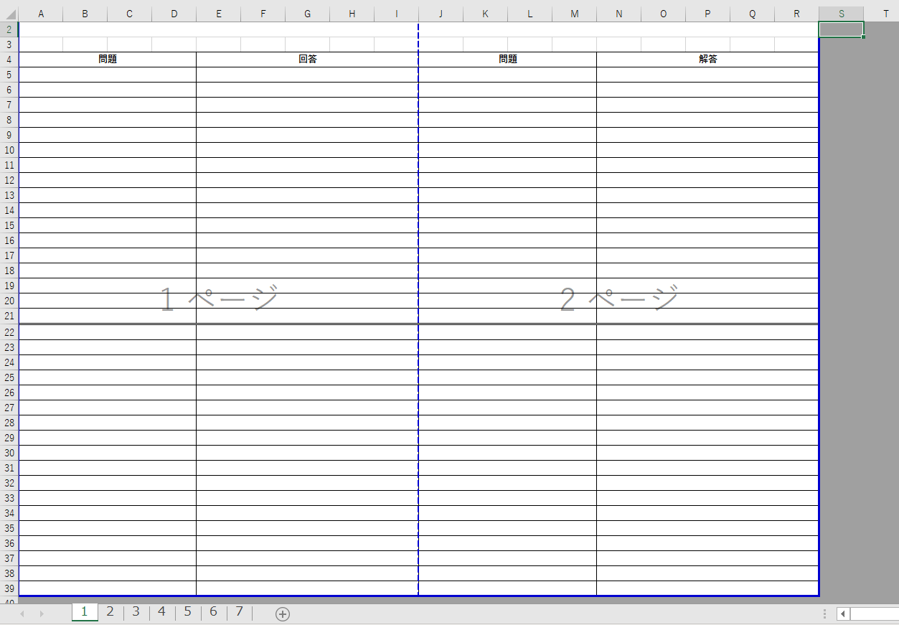
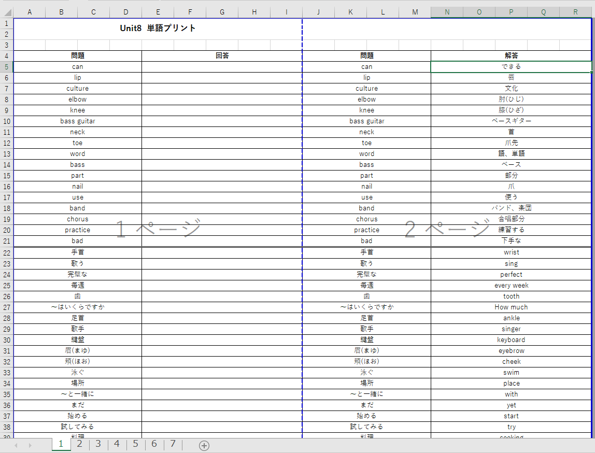
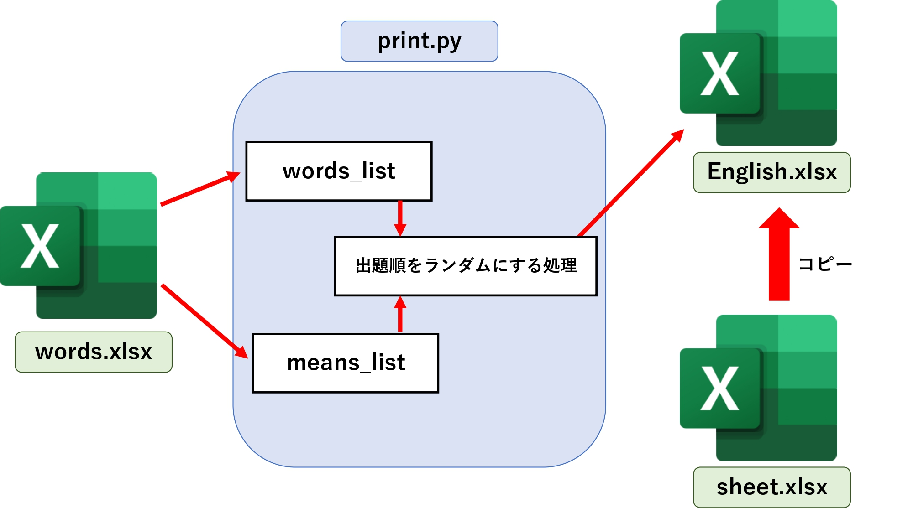

【Python】英単語プリント自動作成プログラム
はじめに
僕は大学1年生からの2年間で塾講師をしていました。
教育活動を通じて、コミュニケーション能力や人にものを教える能力を
高めることができ、生徒ともに自分も成長することができました。
そんな僕は数学、理科、英語を担当していました。
そして英語の授業の際は必ず英単語テストを実施し、宿題には英単語プリントを
6日分配布していました。これらをすべて手書きで作成するのは非常に
手間がかかるためプログラムを作成して自動化することにしました。
要件定義
今回はプログラムを実行するだけで、7枚分の英単語プリント(Excelファイル) が出力されるプログラムを作成しました。具体的には次の5つの機能を 実装しました。
問題用紙と解答用紙の2ページで1セットとする。
問題用紙1枚で英単語→日本語、日本語→英単語を20問ずつ作成する。
問題は完全ランダムで出題するようにする。
7枚分のプリントを1つのExcelファイルで出力する。
複数人の生徒に対応できるようする。
今回は生徒の名前などの個人情報が含まれるため、ファイル名や変数名に細心の注意を 払いながら作成しました。
プログラムの仕組み
今回はPythonのライブラリであるopenpyxlでプログラムを作成しました。
まず初めにExcelファイルに英単語と日本語の意味を打ち込みます。
今回は生徒の所持している教科書の単元ごとにシートを区切っています。
また、1人の生徒につき1つのExcelファイルを作成しています。
次にExcelファイルをopenpyxlでロードし、英単語をword_list、意味をmean_listに
格納していきます。
次にリストに格納した英単語と日本語の意味を英単語プリントのテンプレートファイルに
書き込んでいきます。このテンプレートファイルはsheet.xlsxとしてスクリプトファイルと
同じディレクトリに保存してあります。sheet.xlsxはこのようになっています。

画像のようなシートが7つあります。プログラムが実行された際はsheet.xlsxをコピーして
English.xlsxとしてデスクトップ上に保存し、そこに単語や意味の書き込みを行います。
書き込みがされたEnglish.xlsxはこのようになっています。

このEnglish.xlsxを印刷することで7セット分の英単語プリントを作成できます。
長々と解説しましたが、ユーザ視点ではプログラムを実行し、生徒番号とUnitを指定することで
デスクトップに英単語プリントのExcelファイルが生成されるという感じになります。

ソースコード
今回作成したプログラムのソースコードを掲載します。
今後の改善点
コードが冗長になっている部分が多い
ワンクリックで印刷までできるようにする
正答率が低い問題を優先的にピックアップする機能
まとめ
これまでは手書きで10問ほどのプリントしか作成できなかったが、
プログラムで自動化したことで、より質の高いプリントを瞬時に作成できるようになった。
これによって授業前の作業がかなり楽になったので、プログラムの効果の大きさを実感できました。